얼음의 금이 조금 더 벌어졌다. 지난주 표의 빈칸 자리다.
오인턴
“2주차에 검증 세 줄 적어놨잖아. 근데 지키는지는 결국 내가 확인하네.”
“…시종이 내놓기 전에 자기가 확인하면 안 되나?”
▼얼음의 금이 조금 더 벌어졌다. 지난주 표의 빈칸 자리다.
“2주차에 검증 세 줄 적어놨잖아. 근데 지키는지는 결국 내가 확인하네.”
“…시종이 내놓기 전에 자기가 확인하면 안 되나?”
▼페어리가 금 간 자리를 콕 찍는다.
“저 세 줄은 지켜야 할 규칙이에요. 지켰는지 안 지켰는지는 안 나와요.”
“이번 주엔 저걸 내놓기 전에 한 번 돌리는 점검으로 바꿔요. 그러면 기록이 남아요.”
▼“이번 주는 시종.md에 두 줄 더하고, 새 시종 하나를 들여요. 요약 위에 기획안이 서요.”
▼지난주 표가 나온 그 대화. 규칙.md에 검증 세 줄이 그대로 있는지 먼저 확인한다.
오늘 나오는 기획안이 다음 주 발표자료의 뼈대가 된다.
주문서를 복사해 시종.md를 ctrl+A → ctrl+V로 덮어쓴다. 바뀐 건 ‘다 됐다는 기준’의 점검 줄뿐이다 — 내놓기 전에 규칙.md의 검증 세 줄에 맞는지 스스로 대조하게 한다.
점검 기록은 고친 항목마다 무엇을, 무엇에서 무엇으로, 어느 파일 몇 쪽 기준으로 고쳤는지 적게 한다. 전·후와 근거가 있어야 내가 다시 확인할 수 있다.
호출은 지난주와 같다. 시종.md가 바뀌었으니 결과 맨 아래에 점검 기록이 붙어 나와야 한다.
위에서부터 읽지 말고 맨 아래 점검 기록부터. 판정 세 번을 차례로 통과하면 끝.
결과 맨 아래에 ‘점검 기록’이 붙어 나왔나?
고친 항목마다 무엇을 / 고치기 전 → 고친 후 / 근거(파일명·쪽)가 한 줄씩 있나?
하나를 골라 근거 파일의 그 쪽을 열어 보니,
고친 후 값이 원문에 그대로 있나?
검증을 시종이 먼저 하고, 나는 기록 하나만 확인했다. 이 요약 위에 둘째 시종을 세운다.
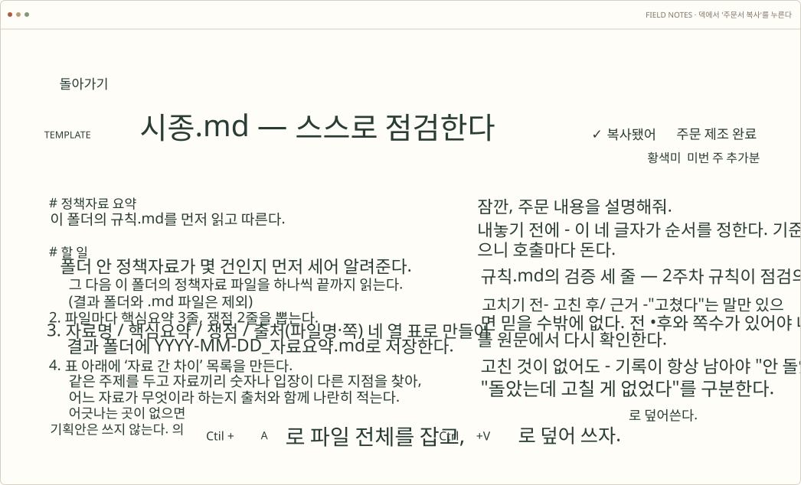
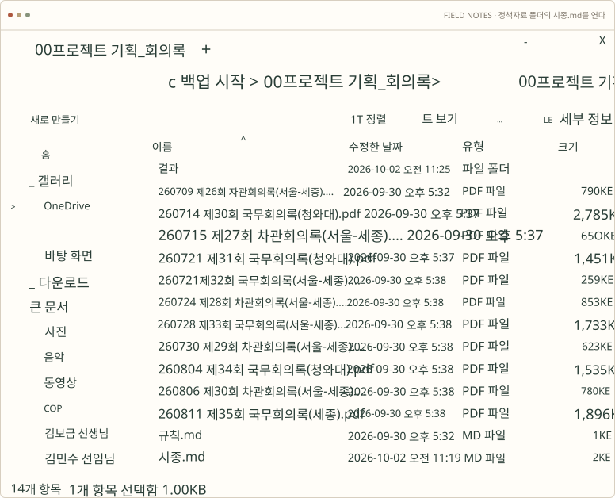
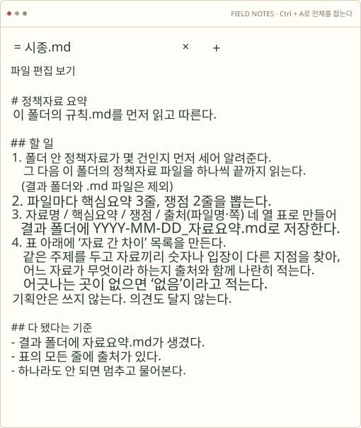
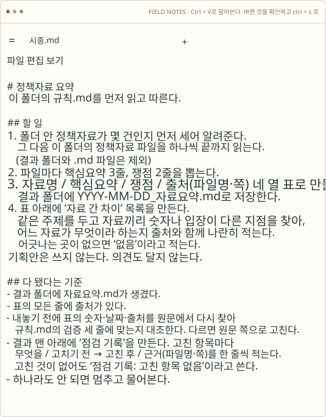
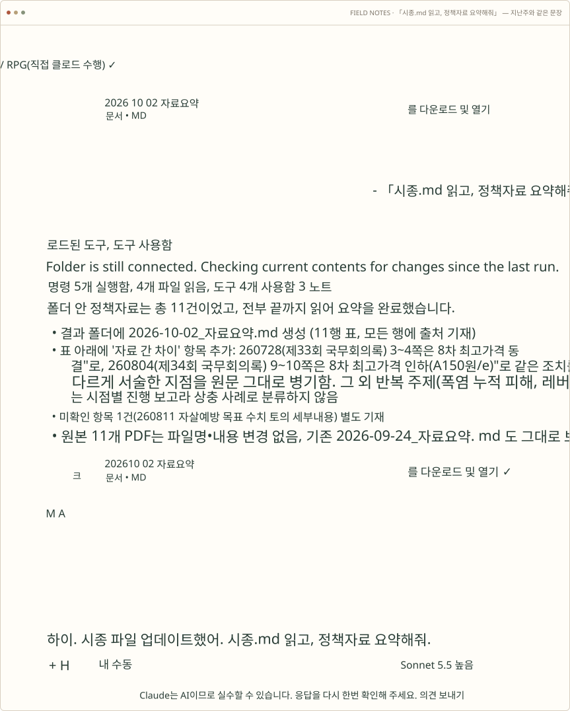
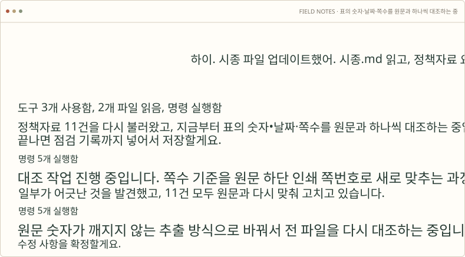
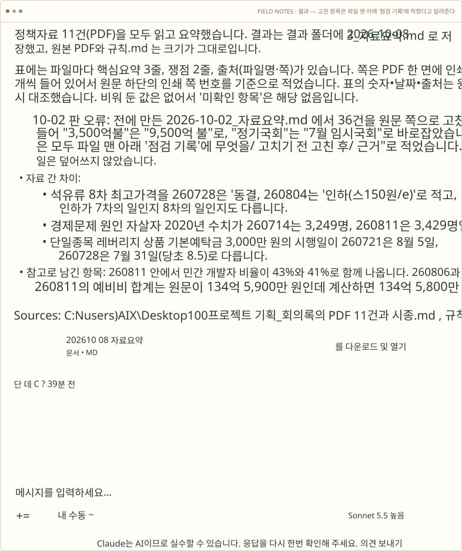
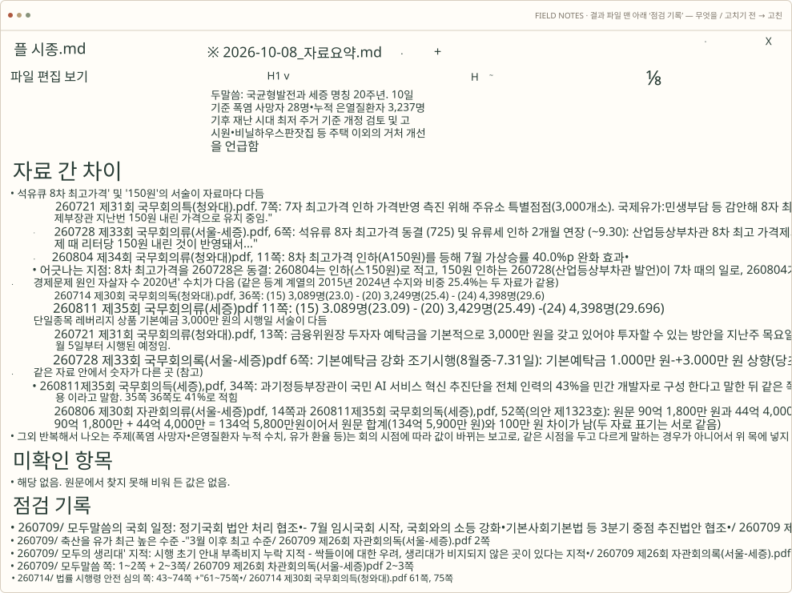
# 정책자료 요약 이 폴더의 규칙.md를 먼저 읽고 따른다. ## 할 일 1. 폴더 안 정책자료가 몇 건인지 먼저 세어 알려준다. 그 다음 이 폴더의 정책자료 파일을 하나씩 끝까지 읽는다. (결과 폴더와 .md 파일은 제외) 2. 파일마다 핵심요약 3줄, 쟁점 2줄을 뽑는다. 3. 자료명 / 핵심요약 / 쟁점 / 출처(파일명·쪽) 네 열 표로 만들어 결과 폴더에 YYYY-MM-DD_자료요약.md로 저장한다. 4. 표 아래에 ‘자료 간 차이’ 목록을 만든다. 같은 주제를 두고 자료끼리 숫자나 입장이 다른 지점을 찾아, 어느 자료가 무엇이라 하는지 출처와 함께 나란히 적는다. 어긋나는 곳이 없으면 ‘없음’이라고 적는다. 기획안은 쓰지 않는다. 의견도 달지 않는다. ## 다 됐다는 기준 - 결과 폴더에 자료요약.md가 생겼다. - 표의 모든 줄에 출처가 있다. - 내놓기 전에 표의 숫자·날짜·출처를 원문에서 다시 찾아 규칙.md의 검증 세 줄에 맞는지 대조한다. 다르면 원문 쪽으로 고친다. - 결과 맨 아래에 ‘점검 기록’을 만든다. 고친 항목마다 무엇을 / 고치기 전 → 고친 후 / 근거(파일명·쪽)를 한 줄씩 적는다. 고친 것이 없어도 ‘점검 기록: 고친 항목 없음’이라고 쓴다. - 하나라도 안 되면 멈추고 물어본다.
내놓기 전에 — 이 네 글자가 순서를 정한다. 기준 안에 있으니 호출마다 돈다.
규칙.md의 검증 세 줄 — 2주차 규칙이 점검의 기준이다.
고치기 전 → 고친 후 / 근거 — “고쳤다”는 말만 있으면 믿을 수밖에 없다. 전·후와 쪽수가 있어야 내가 그 하나를 원문에서 다시 확인한다.
고친 것이 없어도 — 기록이 항상 남아야 “안 돌았다”와 “돌았는데 고칠 게 없었다”를 구분한다.
시종.md를 열고 ctrl+A, ctrl+V로 덮어쓴다.
시종이 내놓기 직전에 멈춘다. 금 간 자리를 스스로 다시 얼린다.
“지금 보셨죠? 스스로 되돌아간 거예요. 용사님이 시키지 않았는데.”
“이제 틀린 건 얘가 먼저 잡아요. 용사님은 고친 기록만 확인하면 돼요.
그럼 이 표 위에 둘째 시종을 세워요 — 요약을 읽고 기획안을 쓰는 애요.”
시종.md는 그대로 둔다. 새 파일이다. 정책자료 폴더에 기획안.md를 만들고, 주문서를 복사해 빈 파일에 ctrl+V → ctrl+S.
왜 시종.md에 안 붙이고 새 파일인가 — 요약이 틀린 채로 기획안까지 가면 발표자료 전체가 틀린 전제 위에 선다. 중간에 내가 한 번 보는 지점이 있어야 한다. 그래서 시종을 나눈다. 네 칸은 요약 시종과 똑같다.
파일 이름은 결과 폴더에 실제로 있는 이름을 그대로 쓴다 (예: 2026-10-02_자료요약.md). 기획안 시종은 원본을 읽지 않고 요약 하나만 읽는다. 그래서 금방 끝난다.
호출하고 나서 무슨 일이 일어났나?
둘째 시종이 요약 하나만 읽고 기획안을 냈다.
기획안을 열면 맨 아래 점검 기록에 기획안의 숫자마다 요약의 어느 항목과 같은지 적혀 있다. 요약은 STEP 01에서 원문과 맞춰 놨으니, 요약과 같으면 원문과도 같다.
배경 / 쟁점 / 제안 / 다음 단계 네 덩어리이고, 덩어리마다 첫 줄이 결론 한 문장인가?
점검 기록에서 숫자 하나를 골라 요약 파일을 열어 보니,
그 숫자가 거기 있나?
2막 완료. 요약 → 기획안, 시종 둘이 이어졌다. 다음 주엔 이 기획안이 발표자료의 뼈대가 된다.
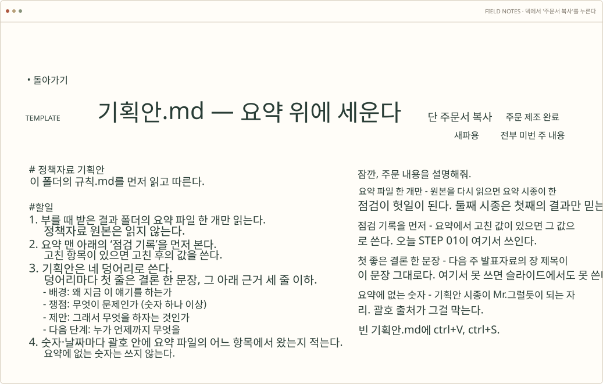
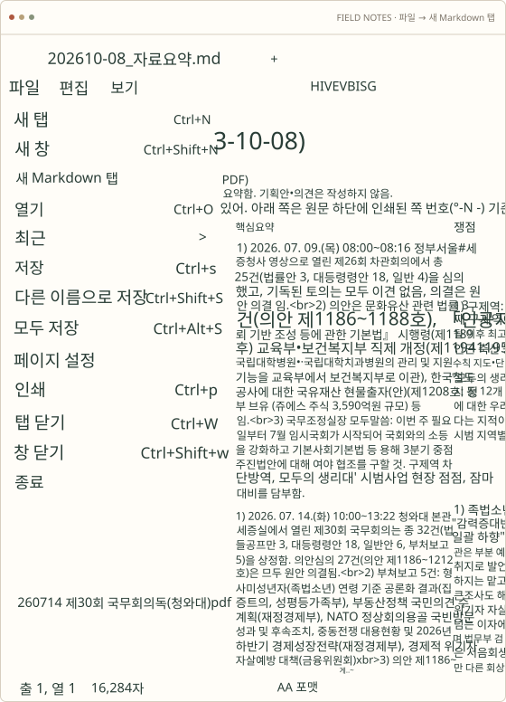
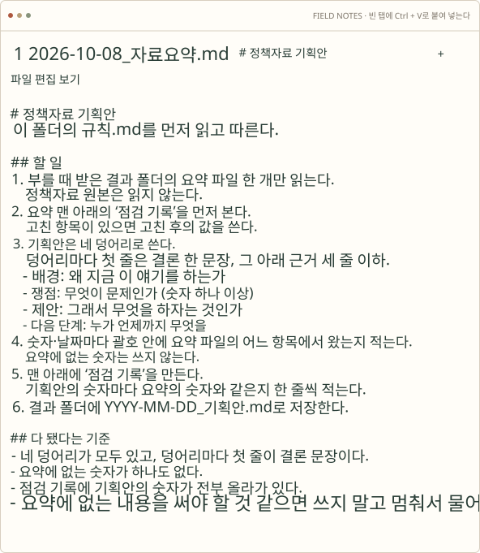
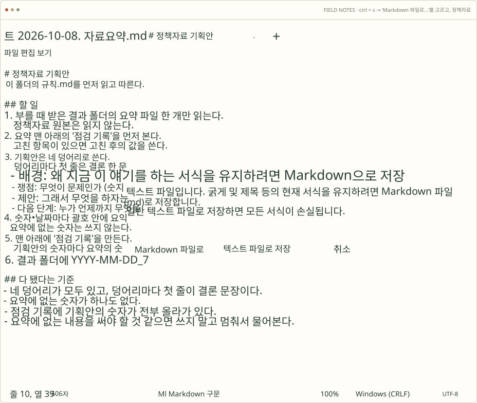
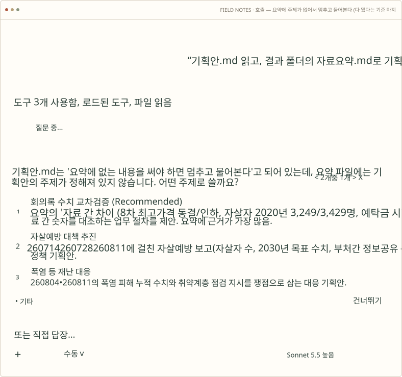
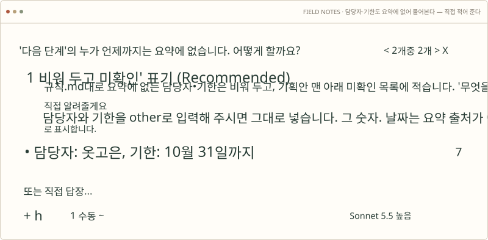
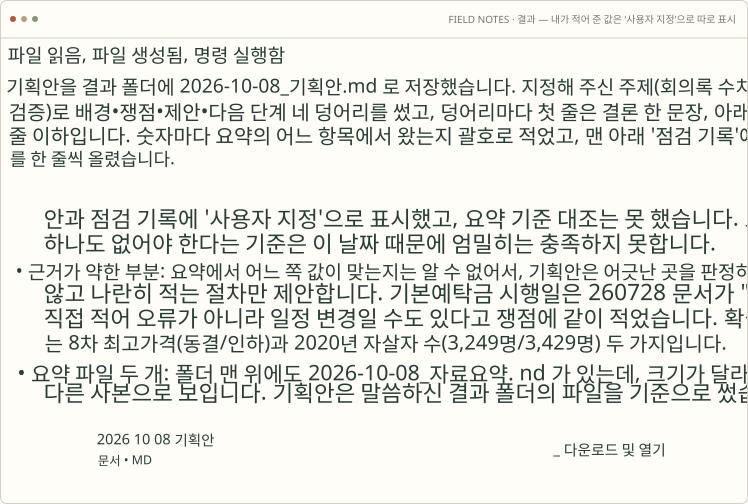
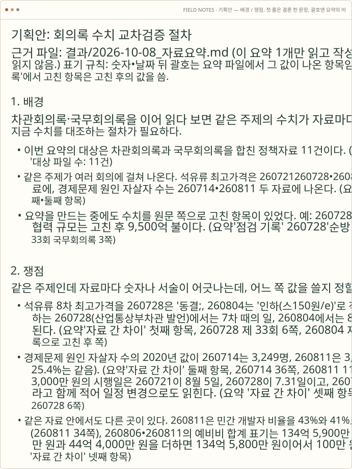
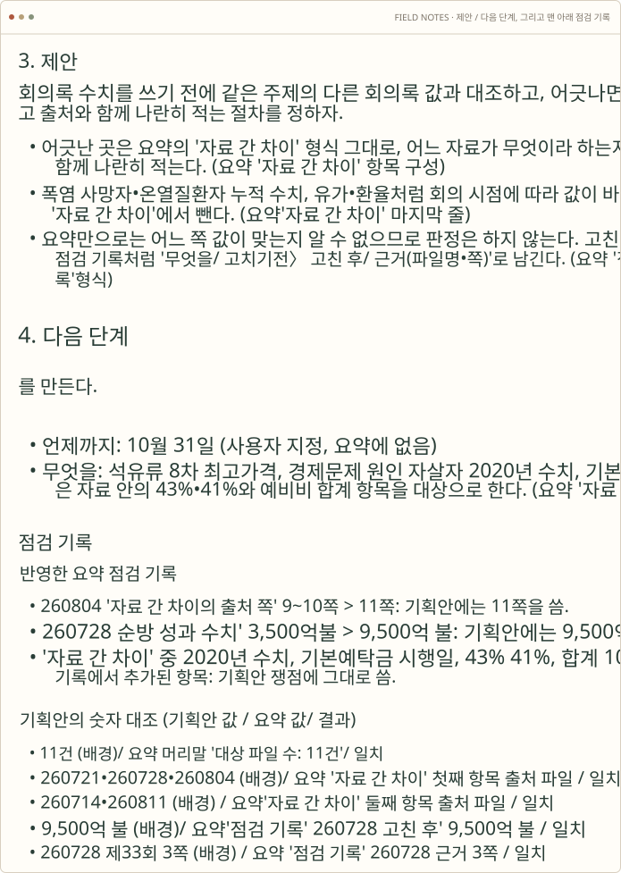
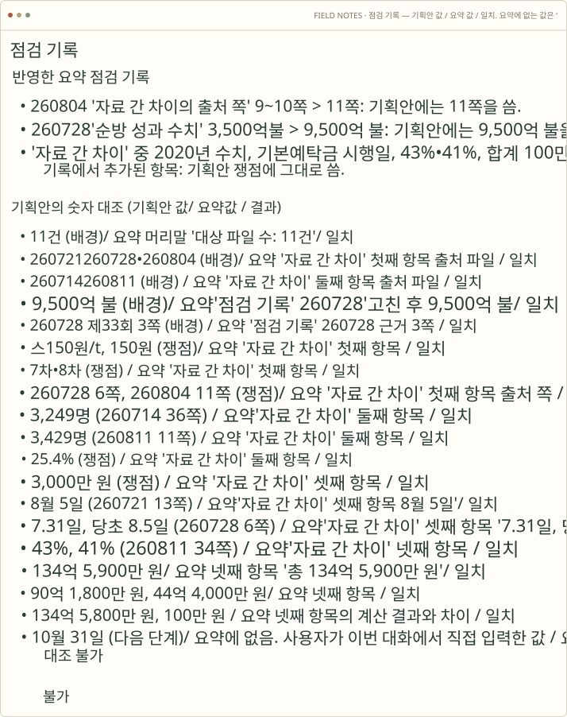
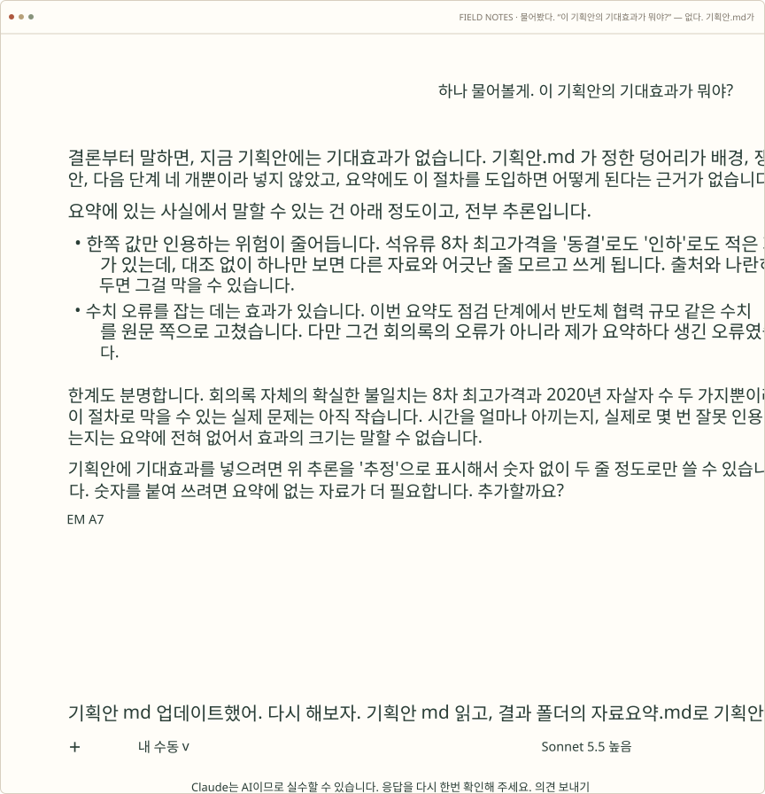
# 기획안 이 폴더의 규칙.md를 먼저 읽고 따른다. ## 할 일 1. 부를 때 받은 결과 폴더의 요약 파일 한 개만 읽는다. 정책자료 원본은 읽지 않는다. 2. 요약 맨 아래의 ‘점검 기록’을 먼저 본다. 고친 항목이 있으면 고친 후의 값을 쓴다. 3. 기획안은 네 덩어리로 쓴다. 덩어리마다 첫 줄은 결론 한 문장, 그 아래 근거 세 줄 이하. - 배경: 왜 지금 이 얘기를 하는가 - 쟁점: 무엇이 문제인가 (숫자 하나 이상) - 제안: 그래서 무엇을 하자는 것인가 - 다음 단계: 누가 언제까지 무엇을 4. 숫자·날짜마다 괄호 안에 요약 파일의 어느 항목에서 왔는지 적는다. 요약에 없는 숫자는 쓰지 않는다. 5. 맨 아래에 ‘점검 기록’을 만든다. 기획안의 숫자마다 요약의 숫자와 같은지 한 줄씩 적는다. 6. 결과 폴더에 YYYY-MM-DD_기획안.md로 저장한다. ## 다 됐다는 기준 - 네 덩어리가 모두 있고, 덩어리마다 첫 줄이 결론 문장이다. - 요약에 없는 숫자가 하나도 없다. - 점검 기록에 기획안의 숫자가 전부 올라가 있다. - 요약에 없는 내용을 써야 할 것 같으면 쓰지 말고 멈춰서 물어본다.
요약 파일 한 개만 — 원본을 다시 읽으면 요약 시종이 한 점검이 헛일이 된다. 둘째 시종은 첫째의 결과만 믿는다.
점검 기록을 먼저 — 요약에서 고친 값이 있으면 그 값으로 쓴다. 오늘 STEP 01이 여기서 쓰인다.
첫 줄은 결론 한 문장 — 다음 주 발표자료의 장 제목이 이 문장 그대로다. 여기서 못 쓰면 슬라이드에서도 못 쓴다.
요약에 없는 숫자 — 기획안 시종이 Mr.그럴듯이 되는 자리. 괄호 출처가 그걸 막는다.
빈 기획안.md에 ctrl+V, ctrl+S.
하네스를 잘 채운 지금부터 나오는 몬스터다. 그럴듯의 삼촌. 규칙을 잘 지키니까 틀리지는 않는데, 안 적은 건 영원히 안 한다.
기획안을 읽던 오인턴이 멈춘다. 네 덩어리 — 그리고 끝.
“…잠깐. 기획안에 기대효과가 없는데? 이런 기획안으로 누굴 설득해?”
▼“기대효과요? 그런 덩어리는 없었는데요.
시키신 건 배경, 쟁점, 제안, 다음 단계. 네 개. 딱 거기까지.”
“말이 되죠. 파일에 없으니까. 저는 파일 밖으로는 한 글자도 안 나갑니다. 그게 제 ‘규칙’입니다.”
▼페어리가 박사와 오인턴 사이로 내려온다.
“저 녀석, Mr.그럴듯의 삼촌이에요. 조카는 없는 걸 지어내고, 삼촌은 적힌 것만 해요.”
▼“아, 내 귀염둥이 조카, Mr.그럴듯을 이미 만났다고요?
그 녀석은, 허풍떠는 말투가 참 귀엽죠.”
오인턴이 지난주 숫자 세 개를 떠올린다.
“귀엽긴요. 지난주에 그 녀석 때문에 숫자 세 개를 다시 찾았는데요.”
▼“그래서 제가 온 겁니다. 조카가 사고 친 집은 삼촌이 뒤처리를 하죠.
저는 지어내지 않습니다. 대신 안 적힌 건 안 합니다.
집안이 다 그래요 — 하나는 넘치고, 하나는 모자라고.”
페어리가 오인턴 귀 옆으로 바짝 붙는다.
“규칙을 잘 먹일수록 박사는 더 보수적이 돼요 — 사고 안 치려고 적히지 않은 건 절대 안 하거든요.
다스리는 법은 똑같아요. 파일에 적는 거예요. 이번엔 시종이 모르는 건 나한테 묻게 적어요.”
“…묻는 것도, 적혀 있어야 묻습니다.”
▼기대효과가 없는 건 시종 탓이 아니라 목표를 모르는 채로 쓰게 한 파일 탓이다. 목표 없는 기획안은 요약을 재배열한 것일 뿐이다. 주문서를 복사해 기획안.md를 ctrl+A → ctrl+V로 덮어쓰고 ctrl+S.
늘어난 건 셋 — 쓰기 전에 목표·기대효과·대상·시간을 묻고 답 전엔 안 쓴다 / 답에 맞는 주제 후보를 내고 고르게 한다 / 다섯째 덩어리 기대효과, 근거 없으면 ‘추정’.
「기획안.md 읽고, 결과 폴더의 자료요약.md로 기획안 써줘」 — 아까와 같은 문장. 바뀐 건 파일뿐이다. 이번엔 시종이 쓰기 전에 물어야 한다. 답하고, 후보를 고르고, 새 기획안의 맨 위와 맨 아래 덩어리를 본다.
호출하니 시종이 먼저 뭘 했나?
고른 뒤 나온 기획안 — 맨 위에 내 답이 있고, 기대효과 덩어리는?
시종이 모르는 건 나한테 묻게 적었고, 지어내기 쉬운 자리엔 ‘추정’을 붙였다. 2막 완료.
맨 위 — 내가 답한 네 줄이 답하신 그대로 적혀 있는지. 맨 아래 — 점검 기록에 내가 직접 준 값(담당자·기한)이 ‘대조 불가’로 따로 남았는지. 그리고 시종의 마지막 보고를 읽는다.
시종이 먼저 말해 준다: 기대효과는 ‘추정’으로 소박하게 썼다, 요약에 연결 근거가 없는 둘은 사례로만 썼다, 15분에 맞되 쟁점 근거가 약하면 길어질 수 있다. 다섯째 덩어리를 쓰게 했더니, 약한 자리를 스스로 짚는다.
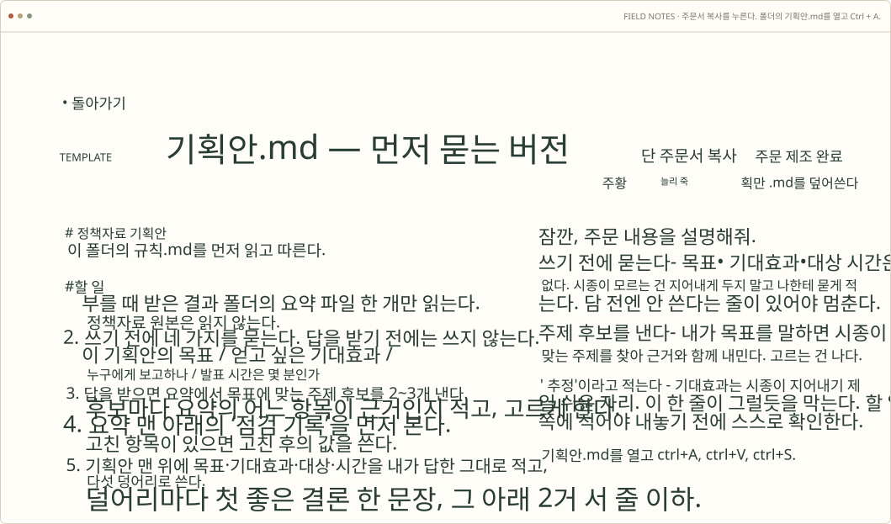
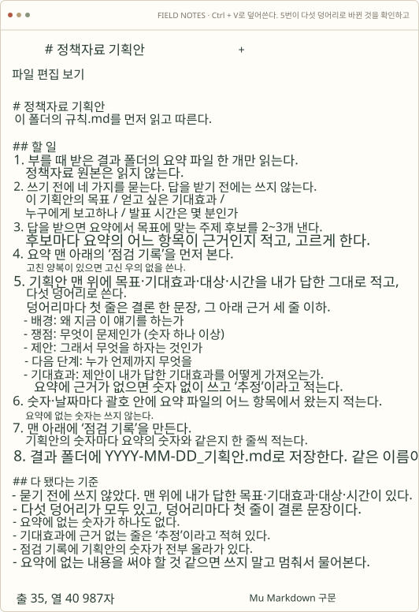
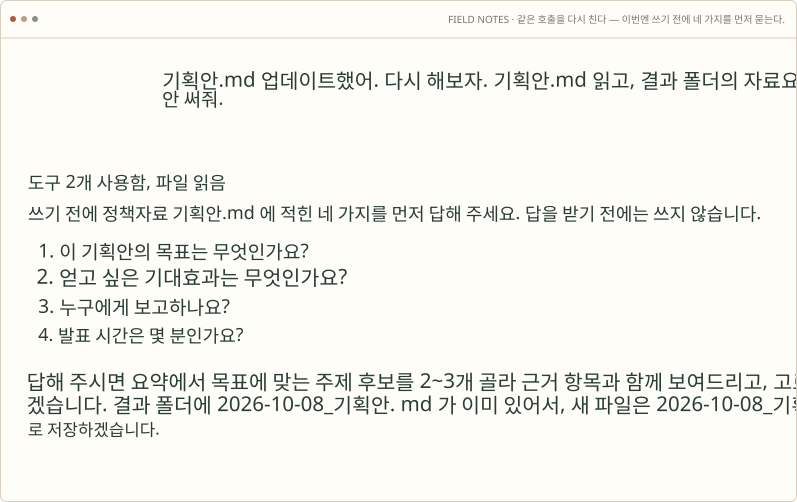
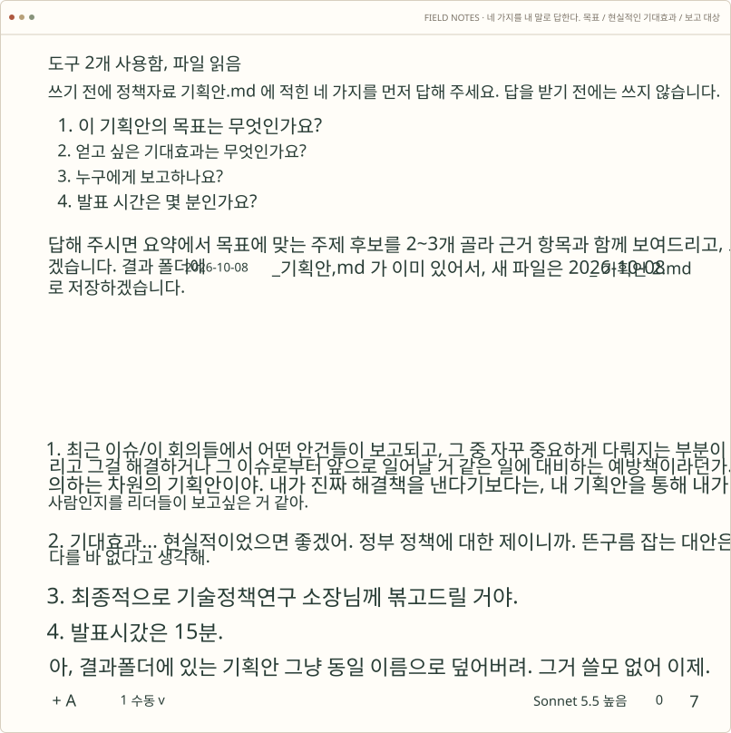
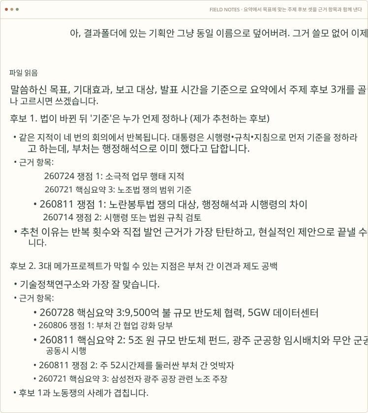
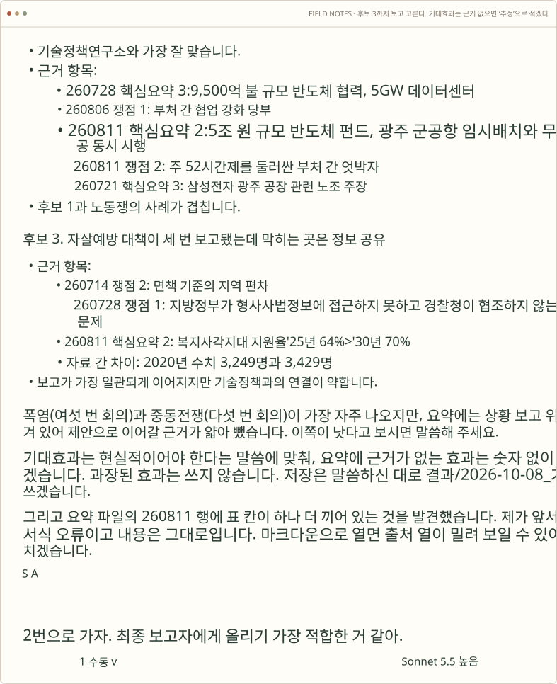
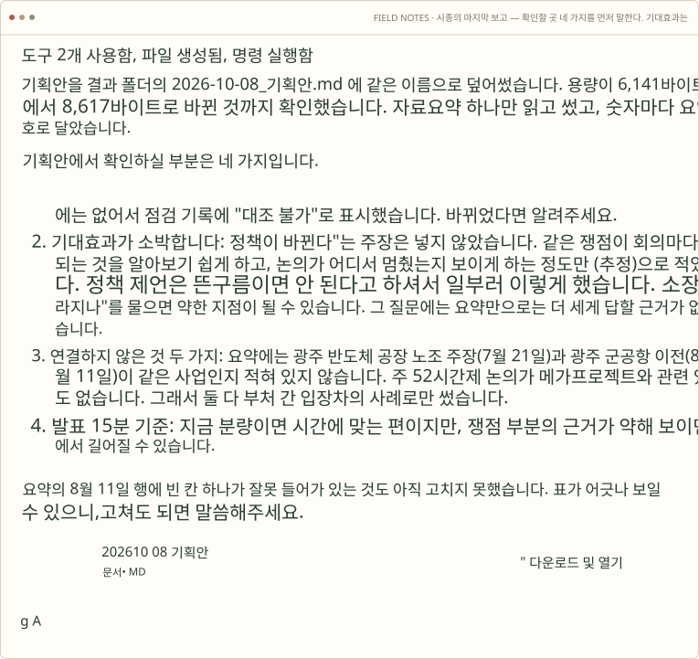
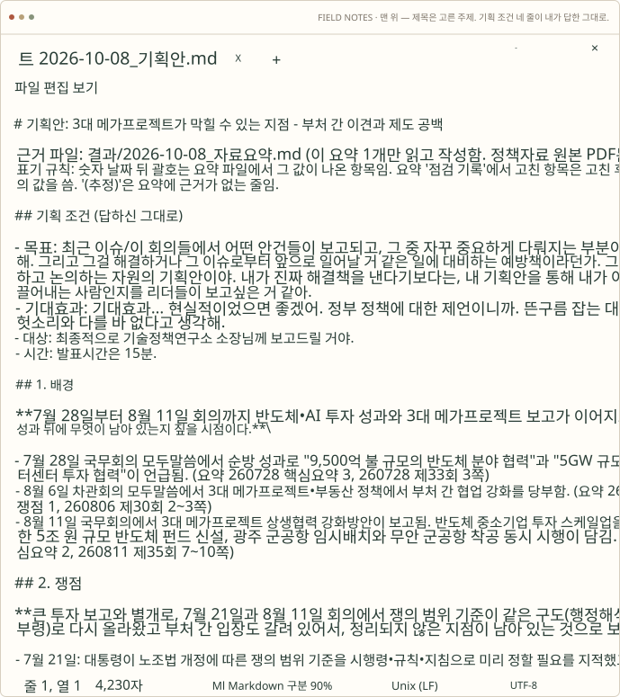
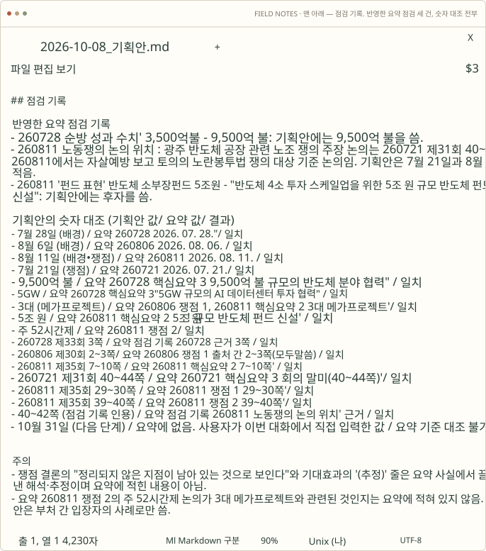
# 기획안 이 폴더의 규칙.md를 먼저 읽고 따른다. ## 할 일 1. 부를 때 받은 결과 폴더의 요약 파일 한 개만 읽는다. 정책자료 원본은 읽지 않는다. 2. 쓰기 전에 네 가지를 묻는다. 답을 받기 전에는 쓰지 않는다. 이 기획안의 목표 / 얻고 싶은 기대효과 / 누구에게 보고하나 / 발표 시간은 몇 분인가 3. 답을 받으면 요약에서 목표에 맞는 주제 후보를 2~3개 낸다. 후보마다 요약의 어느 항목이 근거인지 적고, 고르게 한다. 4. 요약 맨 아래의 ‘점검 기록’을 먼저 본다. 고친 항목이 있으면 고친 후의 값을 쓴다. 5. 기획안 맨 위에 목표·기대효과·대상·시간을 내가 답한 그대로 적고, 다섯 덩어리로 쓴다. 덩어리마다 첫 줄은 결론 한 문장, 그 아래 근거 세 줄 이하. - 배경: 왜 지금 이 얘기를 하는가 - 쟁점: 무엇이 문제인가 (숫자 하나 이상) - 제안: 그래서 무엇을 하자는 것인가 - 다음 단계: 누가 언제까지 무엇을 - 기대효과: 제안이 내가 답한 기대효과를 어떻게 가져오는가. 요약에 근거가 없으면 숫자 없이 쓰고 ‘추정’이라고 적는다. 6. 숫자·날짜마다 괄호 안에 요약 파일의 어느 항목에서 왔는지 적는다. 요약에 없는 숫자는 쓰지 않는다. 7. 맨 아래에 ‘점검 기록’을 만든다. 기획안의 숫자마다 요약의 숫자와 같은지 한 줄씩 적는다. 8. 결과 폴더에 YYYY-MM-DD_기획안.md로 저장한다. 같은 이름이 있으면 _2를 붙인다. ## 다 됐다는 기준 - 묻기 전에 쓰지 않았다. 맨 위에 내가 답한 목표·기대효과·대상·시간이 있다. - 다섯 덩어리가 모두 있고, 덩어리마다 첫 줄이 결론 문장이다. - 요약에 없는 숫자가 하나도 없다. - 기대효과에 근거 없는 줄은 ‘추정’이라고 적혀 있다. - 점검 기록에 기획안의 숫자가 전부 올라가 있다. - 요약에 없는 내용을 써야 할 것 같으면 쓰지 말고 멈춰서 물어본다.
쓰기 전에 묻는다 — 목표·기대효과·대상·시간은 요약에 없다. 시종이 모르는 건 지어내게 두지 말고 나한테 묻게 적는다. 답 전엔 안 쓴다는 줄이 있어야 멈춘다.
주제 후보를 낸다 — 내가 목표를 말하면 시종이 요약에서 맞는 주제를 찾아 근거와 함께 내민다. 고르는 건 나다.
‘추정’이라고 적는다 — 기대효과는 시종이 지어내기 제일 쉬운 자리. 이 한 줄이 그럴듯을 막는다. 할 일과 기준 양쪽에 적어야 내놓기 전에 스스로 확인한다.
기획안.md를 열고 ctrl+A, ctrl+V, ctrl+S.
새 기획안의 마지막 보고를 페어리가 읽는다.
“보세요, 시종이 먼저 고백했어요. 기대효과는 추정이라고, 두 사례는 연결 근거가 없다고.
전에 만난 그럴듯이었으면 숫자까지 붙여서 당당하게 틀렸을 거예요.
박사는 적힌 만큼만 하지만, 적힌 만큼은 정직해요. 그래서 뭘 적느냐가 내 일이에요.”
기획안에 다섯째 덩어리가 생긴다.
“…다섯째 덩어리가 생겼네요. 그럼 거기까지 하죠.”
▼“‘추정’이라고 적게 한 줄이 핵심이에요. 그거 없이 기대효과를 쓰라고 하면 — 그럴듯이 돌아와요.
그리고 묻게 만든 줄 — 내 목표를 모르는 시종은 기획안을 못 써요. 요약을 다시 늘어놓을 뿐이죠.”
요약 시종은 혼자 돌고, 기획안 시종이 그 위에 선다. 시종이 짚어 준 자리부터 내가 본다. 그런데 이 기획안을 발표자료로 만드는 건 아직 내 손이다.
NEXT · [스토리] 발표 콘티를 짠다
이번 주 기획안을 장별로 쪼개 콘티로 만들고
내용 없는 빈 템플릿부터 뽑아 본다
동굴 끝. 얼음 벽 너머로 초록 빛이 새어 들어온다.
“요약도, 기획안도 나왔어요. 그런데 발표자료는 누가 만들죠?”
“…저 너머예요. 수확의 숲에서 발표자료를 만들어요.”
TO BE CONTINUED · WEEK 06
▼